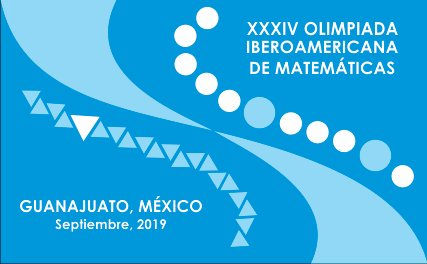
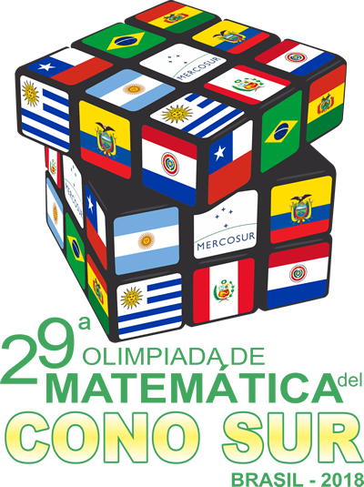
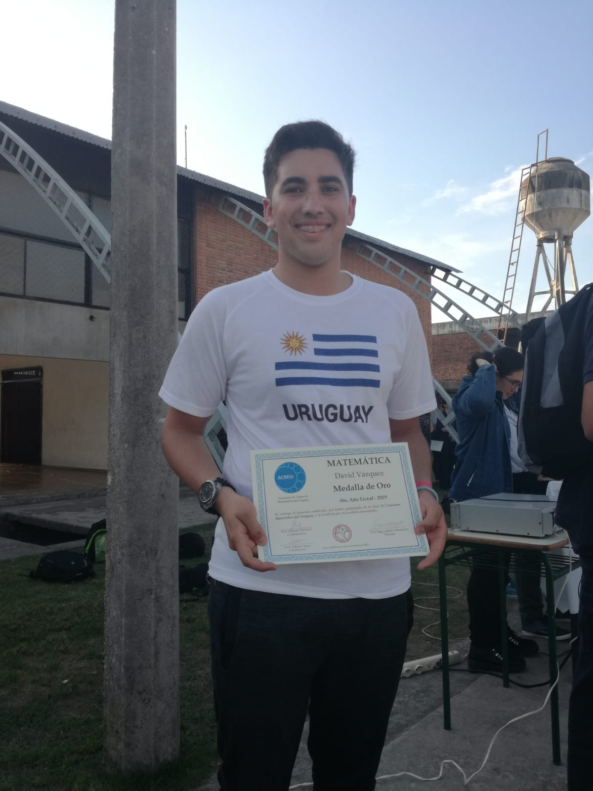
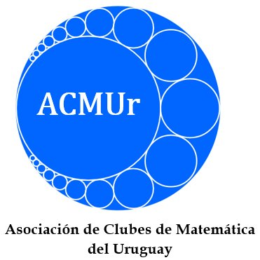
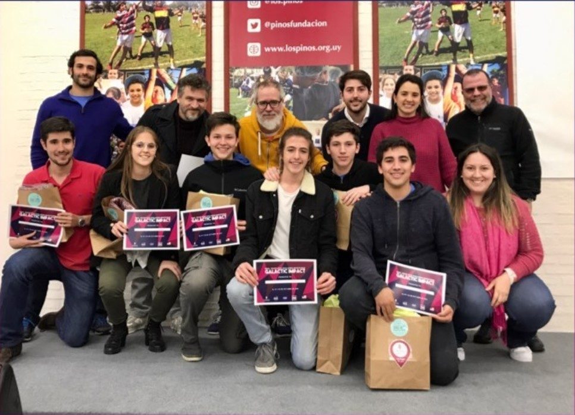

Premios Obtenidos

Olimpiada Iberoamericana de MatemáticasEn el año 2019 fui seleccionado para representar a Uruguay en la Olimpiada Iberoamericana de Matemáticas, que se realizó en la ciudad de Guanajuato, México. En ella, la delegación de Uruguay, compuesta también por Dikran Bakkalian, Alejandro Seré y Vladimir Silva, obtuvo una Medalla de Bronce y una Mención de Honor. Además, en los años 2015 y 2017 particié en la Olimpiada Iberoamericana Juvenil de Matemáticas (también conocida como Olimpiada de Mayo), obteniendo Medalla de Bronce en ambos años. |

Olimpiada Matemática de países del ConosurEn el año 2018 fui seleccionado para representar a Uruguay en la Olimpiada Matemática de países del Conosur, que se realizó en la ciudad de Maceió, Brasil. En ella, la delegación de Uruguay, compuesta también por Federico Fornesi y Hernán Puschiasis, obtuvo dos Menciones de Honor |
Olimpiada Nacional de Matemáticas
Entre los años 2013 y 2019 participé en las 7 instancias de la Olimpiada Nacional de Matemáticas, organizada por la Com-Partida Matemática del Uruguay. Pude obtener la Medalla de Plata en el año 2014, el Cuarto Puesto en 2013 y la Mención de Honor en 2016 y 2018.
|  |

Olimpiada Mateclubes del UruguayOrganizada inicialmente por el Centro Educativo "Los Pinos" y luego por la ACMUr, la Olimpiada Mateclubes del Uruguay antes era conocida como la "Olimpiada Matemática de Casavalle", y es la primera Olimpiada donde participé. Como era en sus comienzos únicamente para escolares, solo pude participar en ella en 5 ocaciones, pero en los años en que lo hice conseguí obtener 4 Medallas de Plata y una Medalla de Oro, en mi último año de participación. |

NASA Space Apps ChallengeEn el año 2019 participé del NASA Space Apps Challenge, donde nos propusieron una problemática y 2 días para crear nuestra solución. Nuestro equipo creo un juego con el objetivo de conscientizar sobre el problema de la basura espacial, obteniendo el premio en la categoría "Impacto Galáctico" |
 |
Olimpiada Matemática Rioplatense
Dado a que en el 2014 obtuve la Medalla de Plata en la Olimpiada Nacional, ese mismo año tuve (con 12 años) mi primera oportunidad de participar en una Olimpiada Internacional, siendo en esta ocación la Olimpiada Rioplatense, en la cual participan Uruguay, Argentina, Brasil, Colombia, Perú, Paraguay y México.
Torneo Canguro Matemático
Participé varios años en el torneo Canguro Matemático, una Olimpiada múltiple opción que suma y resta puntajes, obteniendo en cada participación una Mención de Honor

Premio InspiraEn los años 2018 y 2019 fui galardonado con el premio "Inspira" en representación de la matemática, otorgado anualmente por el Consejo de Educación Secundaria a los alumnos destacados de la Educación Pública. |
|